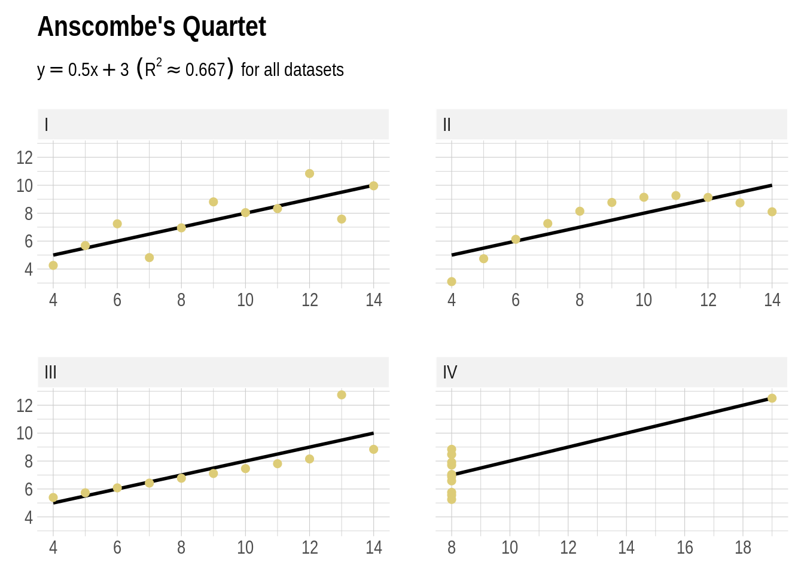

Introduction to Data Analysis
last rendered at: 2019-09-23 08:57:22
Preface
The book introduces key concepts of data analysis from a frequentist and a Bayesian tradition. It uses R to handle, plot and analyze data. It relies on simulation to illustrate selected statistical concepts.
0.1 Testing / Showcasing
Don’t pay too much attention to what is written here.
0.1.1 Quotes
This is a quote:
Tidy datasets […] have a specific structure: each variable is a column, each observation is a row, and each type of observational unit is a table.
— Wickham (2014)
0.1.2 Infobox
At certain stages, possibly at the end of chapters or after important concepts, we might want to use a special infobox (see .infobox in styles.css) to summarise it or give food for thought. Like this:
A horse walks into a bar and orders a pint. The barkeep says “you’re in here pretty often. Think you might be an alcoholic?”, to which the horse says “I don’t think I am.”, and vanishes from existence.
See, the joke is about Descartes’ famous philosophy of ’I think therefore, I am", but to explain that part before the rest of the joke would be to put Descartes before the horse.
We can have boxes with different icons for different purposes:
This might be useful for excercises or general questions. Do you like it?
Sometimes there are things that are really important, like exceptions to general rules. This box might be appropriate for these.
0.1.3 Plots
This is a plot of quite a famous dataset (Anscombe 1973):
tibble(
grp = rep(c("I", "II", "III", "IV"), each = 11),
x = c(anscombe$x1, anscombe$x2, anscombe$x3, anscombe$x4),
y = c(anscombe$y1, anscombe$y2, anscombe$y3, anscombe$y4)
) %>%
ggplot(aes(x, y)) +
geom_smooth(method = lm, se = F) +
geom_point(color = "orange", size = 2) +
scale_y_continuous(breaks = scales::pretty_breaks()) +
scale_x_continuous(breaks = scales::pretty_breaks()) +
labs(title = "Anscombe's Quartet", x = NULL, y = NULL,
subtitle = bquote(y == 0.5 * x + 3 ~ (R^2 %~~% .667) ~ "for all datasets")) +
facet_wrap(~grp, ncol = 2, scales = "free_x") +
theme(strip.background = element_rect(fill = "#f2f2f2", colour = "white"))
References
Anscombe, F. J. 1973. “Graphs in Statistical Analysis.” The American Statistician 27 (1). [American Statistical Association, Taylor & Francis, Ltd.]: 17–21. https://doi.org/10.2307/2682899.
Wickham, Hadley. 2014. “Tidy Data.” Journal of Statistical Software, Articles 59 (10): 1–23. https://doi.org/10.18637/jss.v059.i10.